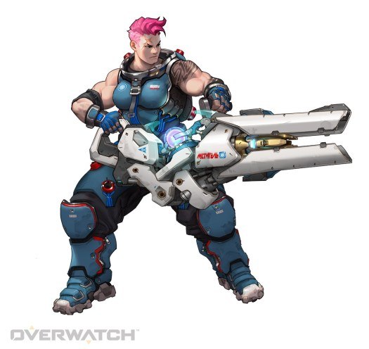

자리야 [돌격]
소개
본명: 알렉산드라 자리야노바, 연령: 28
직업: 군인
활동 근거지: 러시아, 크라스노야르스크 최전선
소속: 러시아 방위군
"함께일 때 우린 강합니다."
알렉산드라 자리야노바는 세계에서 가장 강인한 여성 중 하나다. 그녀는 한때 장래가 촉망되던 운동선수였으나, 전쟁이 일어나자 개인의 영광을 버리고 가족과 친구, 조국을 지키기 위해 나선다.
알렉산드라는 삼십여 년 전에 발발한 옴닉 사태의 최전선에 위치한 시베리아의 외딴 마을에서 태어났다. 러시아 군대가 로봇들을 파괴하고 옴니움을 폐쇄하긴 했지만 그 지역은 이미 초토화된 후였다. 당시 아이였던 알렉산드라는 전쟁의 상흔을 피부로 느끼며 성장했고, 훗날 자신이 힘을 키워 동포의 재기를 돕겠다고 맹세했다.
역도와 보디빌딩에 열중한 알렉산드라는 국가적인 체육 인재 양성 프로그램의 유망주로 선발되었다. 훈련에 정진한 그녀는 마침내 조국을 대표하는 인재로 성장하였고, 다음 세계 선수권 대회에서는 오래도록 난공불락이었던 세계 기록을 깰 거라는 기대를 한 몸에 받았다.
하지만 대회 전날, 오랫동안 휴면 상태였던 시베리아의 옴니움에서 공격이 시작됐고, 알렉산드라의 마을은 다시금 전쟁의 소용돌이에 휘말렸다. 이 소식을 들은 알렉산드라는 즉시 대회를 기권하고 고향의 방위군에 합류했다. 단 하루면 손에 넣었을 모든 부와 명예를 뒤로한 채.
이제 사람들은 알렉산드라를 조국의 상징으로 여기기도, 믿음직한 동료 군인으로 생각하기도 한다. 하지만 알렉산드라는 그저 자신의 힘으로 사랑하는 이들을 지키려는 것뿐이다.